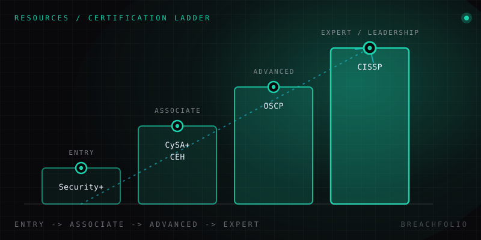

The most recognized cybersecurity certifications, compared.
Four names come up in almost every job posting. Here's what each one actually tests, who it's realistically for, and whether it's worth the money at your career stage.
Open ten cybersecurity job postings and you'll see the same four acronyms recur, in some combination, in almost every one: Security+, CEH, OSCP, CISSP. For someone new to the field, this looks like a checklist – collect all four, get hired. It isn't. These four certifications test different things, at different levels, for different roles, and a beginner who doesn't know that ends up either wasting money on the wrong one or assuming a credential matters more than it actually does. This is a straight, honest comparison of what each one is, who it's genuinely for, and where the postings are overselling their importance.
| Certification | Vendor | Level | Format | Typical cost | Best for |
|---|---|---|---|---|---|
| CompTIA Security+ | CompTIA | Entry | Multiple-choice | ~$392 exam voucher | General IT security foundation, often a hiring filter rather than a specialization signal. |
| CEH (Certified Ethical Hacker) | EC-Council | Intermediate | Multiple-choice (practical version exists separately) | ~$1,199+ exam only | Offensive-security-adjacent, but carries a mixed reputation among practitioners compared to hands-on alternatives. |
| OSCP | OffSec | Advanced | Fully hands-on practical exam | ~$1,649 course + exam bundle | Widely regarded as the credibility benchmark for penetration testing roles. |
| CISSP | ISC2 | Advanced/managerial | Multiple-choice, requires ~5 years verified experience | ~$749 exam fee | Broad governance/risk/architecture credential, common for senior/leadership security roles. |
Costs are approximate list prices in USD and change over time – confirm current pricing directly with each vendor before budgeting.
Security+: the door, not the destination
CompTIA Security+ is where most people's certification journey starts, and there's a good reason for that: it's genuinely entry-level, it covers broad foundational ground – basic cryptography, network security concepts, common attack types, risk fundamentals – and a lot of employers, including a fair number of government and government-contract roles in the US, list it as a required or preferred baseline. That last point matters practically even when it doesn't matter technically: some job postings simply won't pass your resume through without it, regardless of what else you know.
What it honestly is not: a specialization, or proof that you're ready for a specific job. Passing a multiple-choice exam on security concepts doesn't make you a SOC analyst or a penetration tester any more than passing a driving theory test makes you a good driver. Security+ is useful precisely as a first credential, earned while you're working through the fundamentals in the order laid out in the real cybersecurity roadmap – networking, Linux, core concepts, a home lab – not as a substitute for that sequence.
CEH vs OSCP: the honest version of this debate
This comparison generates more forum arguments than any other pair on this list, and it's worth being direct about it rather than diplomatically vague. CEH's standard exam is multiple-choice: it tests whether you recognize tool names, attack categories, and terminology associated with offensive security. EC-Council does offer a separate, less commonly pursued practical version, but the credential most people mean when they say "CEH" is the knowledge-recognition exam.
OSCP works differently by design. The exam itself is a timed, hands-on practical: you're given machines to actually compromise, and then you write a report documenting how you did it, as you would for a real client. There's no multiple-choice component to fall back on – you either get a shell or you don't.
The consequence of that difference is a fairly well-established opinion among working penetration testers, not a fringe or contrarian one: OSCP is the stronger, more respected signal of genuine hands-on capability, and hiring managers in offensive security roles tend to weight it accordingly. That's not a knock on everyone who holds a CEH – it's a legitimate, faster-to-obtain credential that gives someone not yet ready for a fully practical exam a structured way to demonstrate offensive-security-adjacent knowledge, and it still opens doors, particularly in markets or employers less plugged into the practitioner-level reputation gap. But if you're choosing where to spend limited study time and money for a pentesting career specifically, understand which one the field actually treats as the harder proof.

CISSP: the manager's certification
CISSP is a different animal from the other three, and the difference starts before you even sit the exam: ISC2 requires roughly five years of verified, relevant work experience to hold the full credential. You cannot walk out of a bootcamp with a CISSP the way you can with a Security+ or, with enough grinding, a CEH. That gate alone tells you who it's for.
The content matches the gate. CISSP is broad rather than deep: it spans governance, risk management, security architecture, operations, and legal/compliance considerations at a conceptual level, rather than testing whether you can configure a firewall or exploit a vulnerability. It maps far more naturally to governance-risk-and-compliance and security-leadership career paths than to hands-on technical roles; it's a credential built for someone managing a security program, not someone running the scans. If that's the direction you're heading, it's worth reading the GRC Analyst role description in the roadmap article to see how that career path is actually structured before committing years to the experience requirement.
What actually determines whether it's worth the money
None of these certifications has a fixed, universal "worth it" answer – the value is entirely a function of the role you're targeting, and the single most common way people waste money in this space is paying for a certification that doesn't map to that role:
- SOC analyst roles value the broad-but-shallow knowledge that Security+ (and, one level up, CySA+) represents: recognizing alert patterns, understanding common attack types, speaking the vocabulary of the job.
- Penetration testing roles value proof of hands-on skill: an OSCP, or equivalent demonstrated capability – far more than they value any multiple-choice exam, CEH included.
- Senior GRC or security-leadership roles value CISSP, precisely because that's what the credential was built to signal.
Buying a CISSP to break into an entry-level SOC role, or grinding toward OSCP before you've built the networking and Linux fundamentals it assumes, spends money and months solving the wrong problem. Match the certification to the job you're actually trying to get, not to whichever acronym shows up most often in postings you've read.
Certifications are a signal, not a substitute for the fundamentals. They compress "I know this domain" into a line on a resume, but they don't replace the learning order that actually builds the underlying capability – start there. Our cybersecurity roadmap and careers guide lays out that order and the roles it leads to, and how to actually learn cybersecurity covers the study habits that make any of these exams – certification or not – much easier to pass honestly.
Frequently asked questions
What's the difference between CEH and OSCP?
Is CompTIA Security+ worth getting first?
How much work experience does CISSP require?
Which certification should I choose for a SOC analyst role versus a penetration testing role?
Daniel A. and Óscar S. run Breachfolio, a small independent site about security and AI. This article was drafted with AI assistance and reviewed by a person before it went live. We write from documentation, vendor sources and published research rather than from original lab benchmarks, and we link a source in the sentence that relies on it. How we work · About us